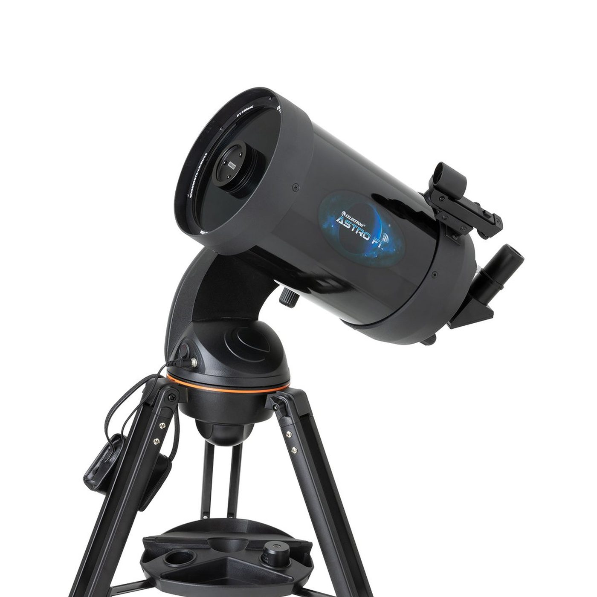
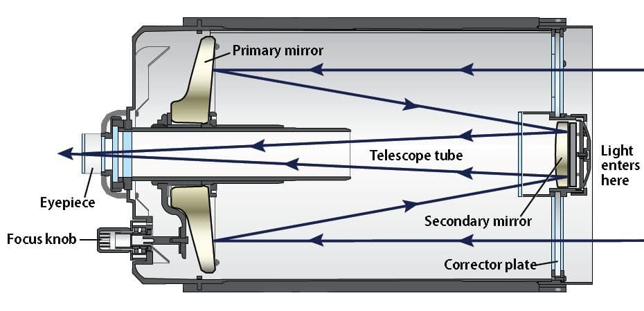

The Catadioptric Telescope

About Catadioptric Telescope ==>
A catadioptric telescope is a type of telescope that uses both mirrors and lenses to form an image.
The most common design for a catadioptric telescope is the Schmidt-Cassegrain, which uses a combination
of a spherical primary mirror and a correcting lens (schmidt corrector plate) at the front of the telescope
to produce a compact design with a long focal length.
This design is popular for both astronomical and terrestrial observation, as well as for photography,
because of its compact size, wide field of view, and ability to produce sharp images. Other designs of
catadioptric telescopes include the Maksutov-Cassegrain and the Ritchey-Chrétien.
Here we will provide list of items and measurements for the telescope having a 10inch primary mirror
- A 10 inch spherical primary mirror.
- A secondary mirror, typically smaller than the primary mirror.
- A correcting lens, such as a Schmidt corrector plate.
- A focuser to adjust the focus of the telescope.
- A mount to hold the telescope securely in place.
- A tube or housing to hold all the optical components together.
- A finder scope to help locate objects in the sky.
- Eyepiece(s) of varying focal lengths to magnify the image.
- A diagonal mirror to view the image in a more comfortable position.
- A set of tools such as Allen wrenches, screwdrivers, and a collimator for aligning the mirrors.
Steps To Make a Catadioptric Telescope ==>
- Gather all the necessary materials
- Prepare the primary mirror
- Install the secondary mirror in its holder
- Install the correcting lens
- Install the focuser and mount the telescope on a stable platform.
- Align the mirrors using a collimator tool
- Install the finder scope, eyepieces, and diagonal mirror.
- Test the telescope and make any necessary adjustments to achieve the best image quality.
- Finally, you have to test the telescope over the sky and do some adjustment if necessary.
* follow layout in the picture below ==>
